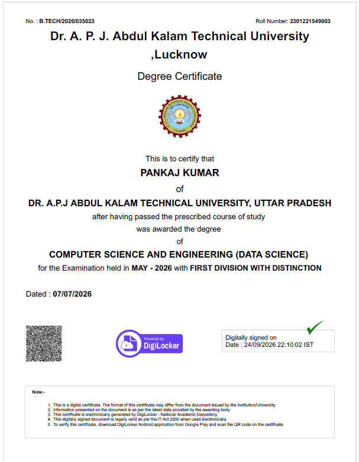
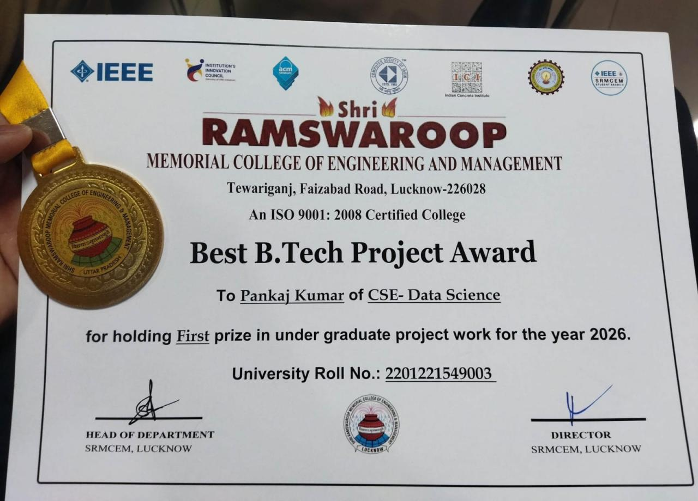
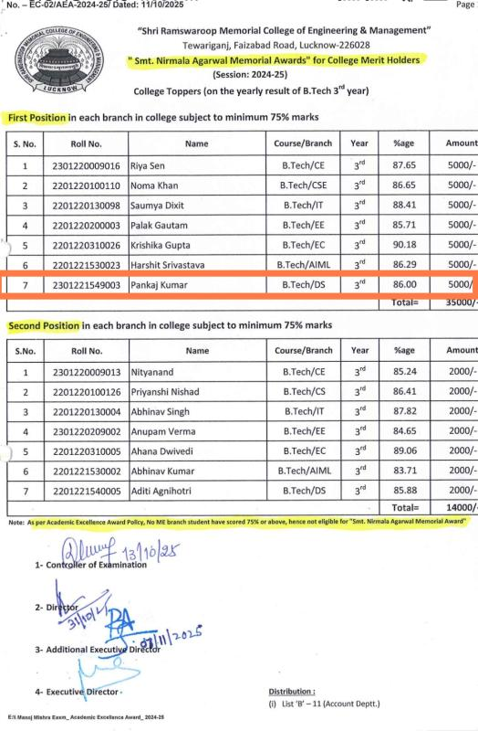
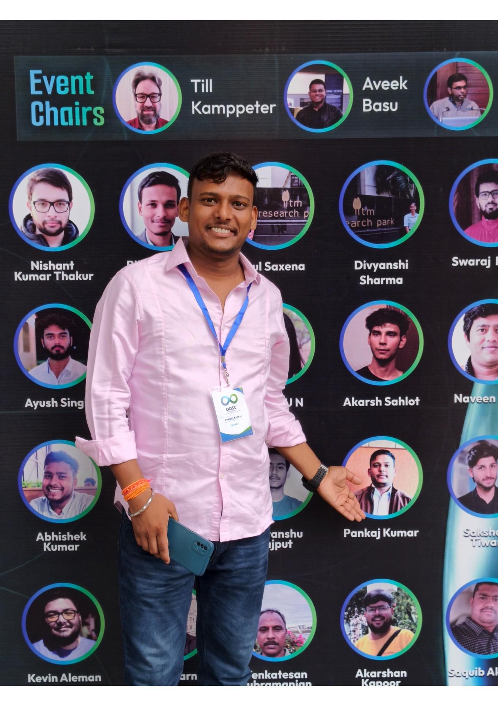
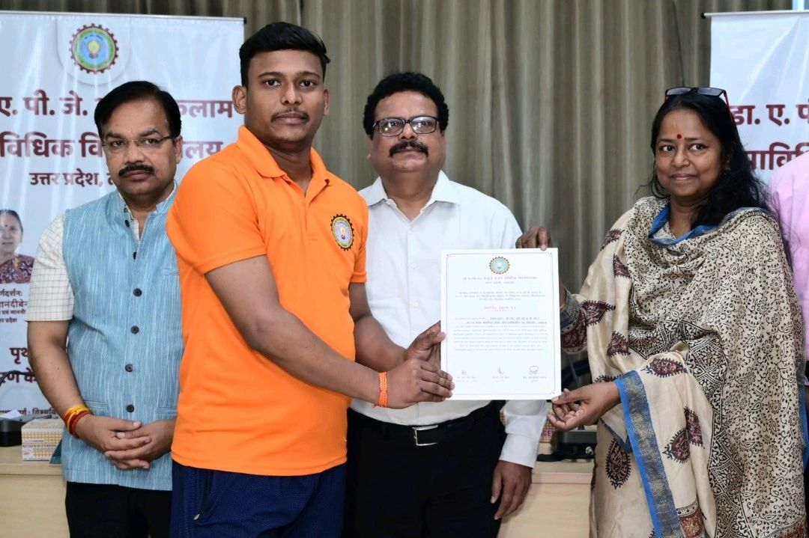

B.Tech – First Division with Distinction (2026)
B.Tech in Computer Science and Engineering (Data Science), 2025–26 graduating year.
View certificate ↗Awards, academic milestones, publications and conference contributions.

B.Tech in Computer Science and Engineering (Data Science), 2025–26 graduating year.
View certificate ↗
ECHO – Smart Virtual Eco Herbal Garden, recognising innovation and technical excellence in an AI-enabled herbal knowledge platform.
View award ↗
First Position in B.Tech CSE (Data Science), 3rd year, with an academic score of 86.00% (Session 2024–25).
View award ↗“ECHO: Engineering a Context-Aware Herbal Intelligence Platform”, Global Journal of Computer and Engineering Technology; presented at the 2026 UoP–IITR–AIMT International Conference.
“Digitization of AYUSH Herbal Knowledge using Modern Web & AI Technologies”.

Delivered the talk “AI Overload: How Careless AI Usage Is Quietly Hurting Pull Request Quality,” exploring responsible AI use without outsourcing understanding. This journey grew from OpenPrinting legacy-driver contributions through research and AI to public speaking, with guidance from Till Kamppeter and Aveek Basu.
Legacy drivers: researching and preserving historical Linux printer-driver software.
Regional Science City, Lucknow.

Participated in a three-day intensive programme on health, pollution, environmental education and safety awareness. Received a certificate of appreciation from the university leadership.